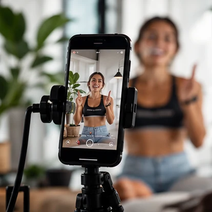
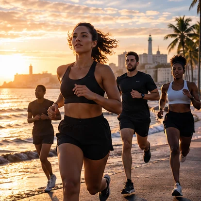
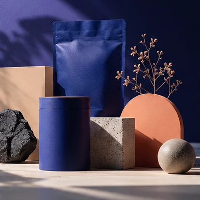
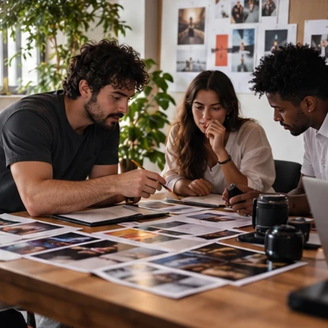
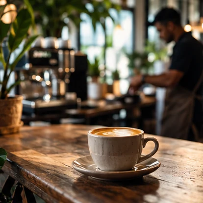

01 / CRIADORESEM CURADORIA
SINAL / CREATORS
Quem está criando formatos novos, construindo comunidades ou convertendo audiência em negócios.
Ganchos · narrativas · frequência · colaboração
Um grande destaque por área. Explore 10 a 20 notícias e cases por editoria quando houver fontes verificáveis.
Imagens de apoio ilustrativas, exceto quando fornecidas pela própria fonte. Manchetes sempre identificadas pela origem; destaques indisponíveis são sinalizados.

01 / QUEM ESTÁ CRIANDOCreators ↗
02 / O ESPORTE EM MOVIMENTORUN ↗
03 / MARCAS EM ASCENSÃORising brands ↗Veja. Entenda. Aplique.
Tente outra busca ou escolha outra categoria.
Referências em vídeo e formatos para estudar, sempre com procedência.
Creators, campanhas, marcas emergentes e negócios locais para estudar.
Quem está criando formatos novos, construindo comunidades ou convertendo audiência em negócios.

Marcas que ativam criadores, UGC e embaixadores. O que foi executado e por que merece estudo.
Novas marcas em destaque, com análise de posicionamento, identidade, diferenciação e crescimento.

Negócios locais de Salvador, da Bahia e do Brasil que merecem atenção por sua estratégia e execução.
Corridas, treinões, organizadores e marcas esportivas: conteúdo, ativações, comunidades e novas oportunidades.
O jornal só termina quando a ideia sai do papel.
Um registro diário do que estava acontecendo e de como pensar à frente.